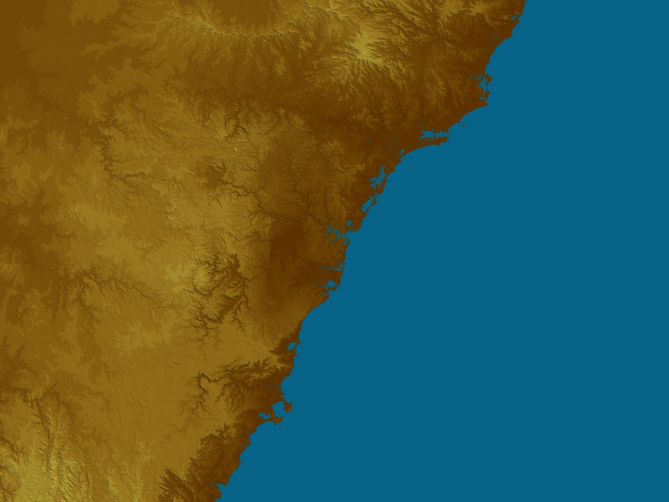

Your web browser is no longer supported. To improve your experience update it here


In Pictures
Black hole at centre of galaxy altering space-time itself

Crane collapses after being struck by lightning in Sydney

A Current Affair
'She is just magnificent': Mum on quick thinking teen who saved school bus from crash

Flood rescues on NSW South Coast as damaging winds, hail forecast

SES receives over 1000 calls for help as NSW lashed by storm

A Current Affair
Brother of 'playboy rapist' urges authorities to keep him behind bars

Changes to be made at Sydney's Rozelle Interchange after third day of chaos

Mother, newborn hospitalised after police chase ends in crash

A Current Affair
Concreter confronted over claims of threats to kill, million dollar debt

Concussion symptoms slipping past many Aussie parents, study shows

Van packed with 10,000 fresh Krispy Kreme doughnuts stolen in Sydney

A Current Affair
Brittany Higgins recounts feeling 'abandoned' after rape claims

Hoon jailed for crash in souped-up car that killed young Sydney woman

Police warn of fake social media scam preying on desperate Melbourne renters

Sydney cop found guilty of assaulting teenager during arrest

Double murderer begs to be locked up for life in cold case trial

PM apologises to thalidomide victims for 'darkest chapter'

'Utterly reckless' Melbourne shop fire linked to underworld war

New $500,000 reward to find Sydney woman last seen in stranger's car

Explainers


National News

exclusive
Ben spent weeks in a coma and needed a liver transplant after catching COVID-19

When Jonathan found a lump he went to the GP. He knows other men probably wouldn't

In Pictures
'Barn find' Ford Falcon hidden under home sells for $230,000

Higgins told Lehrmann to stop 'on a loop' during alleged rape, court told

Retail worker abuse expected to rise with cost-of-living pressures

Police investigating suspected murder-suicide in beachside Adelaide suburb

Surf lifesavers warning against 'deadly' bystander rescue attempts

Boyfriend jailed for decades after 'extreme' murder of Melbourne singer

No plea from man accused of murdering Tasmanian teen

Baby firm fined over sleep comforter ads amid suffocation risk

Police officer accused of Tasering 95-year-old charged with manslaughter
World News

Fragile truce in Gaza holds despite reports Israeli troops being injured in clashes with Hamas

'Long live mother India': Eruption of joy as 41 workers rescued

France to ban smoking on beaches and public parks

Stolen Penny Lane sign made famous by Beatles returned after 47 years

Sean 'Diddy' Combs temporarily steps down as Revolt chairman

Digging by hand to save lives: How the Indian mine rescue unfolded
Sports


Today


A Current Affair


60 Minutes


Property


Auto


SYDNEY Weather
21:10 AEDT21:15 AEDT21:20 AEDT21:25 AEDT21:30 AEDT21:35 AEDT
12:00am
203:00am
196:00am
18
Wednesday
261990%Thursday
281890%Friday
271960%Saturday
271980%Sunday
251870%Monday
241780%Tuesday
27175%

.gif)